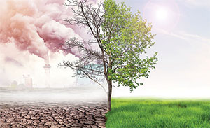

¿Qué es el cambio climático?
El cambio climático se refiere a una variación significativa en los componentes del clima cuando se comparan períodos prolongados, pudiendo ser décadas o más. Por ejemplo, la temperatura media de la década del 50 con respecto a la temperatura media de la década del 90